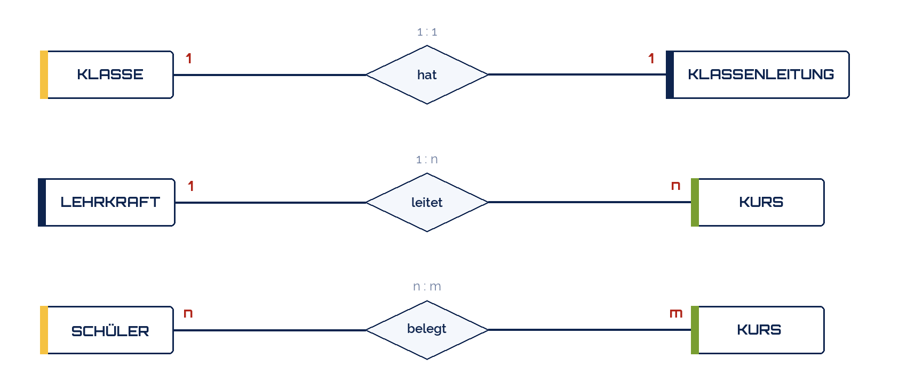
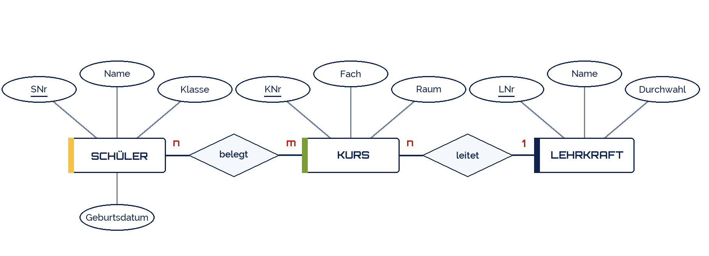
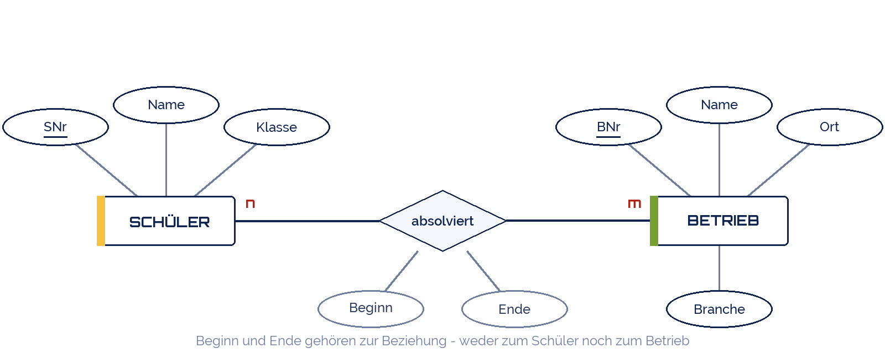

shogun
shogun
Good morning!
Nur das Schöne wird die Welt retten!
Fjodor Dostojewski
Nicht verzagen, Doc Alvers fragen!
Informatik — FOS 12
Entity-Relationship-Modell I
Die Welt beschreiben, bevor man Tabellen baut
Nicht verzagen, Doc Alvers fragen!
Kapitel 01
Wirklichkeit wird Modell
Erst verstehen, was es gibt — dann entscheiden, wie man es speichert
Nicht verzagen, Doc Alvers fragen!
Warum modellieren?
Die Kursliste aus Woche 3 war ein Modell — ein schlechtes: alles in eine Tabelle
Vor der ersten Tabelle drei Fragen: Welche Dinge? Welche Eigenschaften? Welche Beziehungen?
Das ER-Modell (Peter Chen, 1976) beantwortet sie als Bild — ohne eine Zeile SQL
Ein Bild, das Auftraggeber und Entwickler verstehen: die gemeinsame Sprache
Danach ist der Weg zu den Tabellen mechanisch — nächste Woche
Nicht verzagen, Doc Alvers fragen!
Die drei Bausteine (Chen-Notation)
Entitätstyp: Schüler, Kurs, Lehrkraft — die Dinge, die es gibt
Attribut: Name, SNr, Raum — die Eigenschaften eines Dings
Beziehungstyp: belegt, leitet — was die Dinge miteinander zu tun haben
Linien verbinden — mehr Zeichen braucht das Modell nicht
Nicht verzagen, Doc Alvers fragen!
Kapitel 02
Entitäten und Attribute
Was ist ein Ding, was ist nur eine Eigenschaft?
Nicht verzagen, Doc Alvers fragen!
Entität oder Attribut?
Entitätstyp = die Klasse (Schüler), Entität = ein konkretes Exemplar (Lena Krause)
Test: Hat es eigene Eigenschaften? Dann ist es eine Entität
Test: Ist es nur ein Wert? Dann ist es ein Attribut
Jeder Entitätstyp braucht ein Schlüsselattribut: eindeutig, nie leer
Hat er keins, erfindet man eins: SNr, KNr, LNr
| Kandidat | Entität? | Warum |
|---|---|---|
| Schüler | ja | hat Name, Klasse, Datum |
| Klasse 'FO12a' | eher nein | nur ein Wert |
| Lehrkraft | ja | hat Name, Durchwahl |
| Raum | kommt drauf an | nur Nummer → Attribut |
| mit Größe, Ausstattung → Entität |
Nicht verzagen, Doc Alvers fragen!
Vom Text zum Modell: der Auftrag lesen
| Satz aus dem Auftrag | Baustein | Im Modell |
|---|---|---|
| „Jeder Schüler hat eine Nummer, einen Namen und eine Klasse.“ | Entität + Attribute | SCHÜLER (SNr, Name, Klasse) |
| „Ein Kurs hat ein Fach und einen Raum.“ | Entität + Attribute | KURS (KNr, Fach, Raum) |
| „Schüler belegen Kurse.“ | Beziehung | SCHÜLER — belegt — KURS |
| „Jeden Kurs leitet genau eine Lehrkraft.“ | Beziehung + Kardinalität | LEHRKRAFT — leitet — KURS, 1:n |
Hauptwörter werden Entitätstypen — wenn sie eigene Eigenschaften haben
Eigenschaften („hat eine Nummer“) werden Attribute
Verben zwischen zwei Hauptwörtern („belegen“, „leitet“) werden Beziehungstypen
Zahlwörter („genau eine“, „mehrere“) verraten die Kardinalität
Nicht verzagen, Doc Alvers fragen!
Kapitel 03
Beziehungen und Kardinalitäten
Wie viele auf jeder Seite? 1:1, 1:n oder n:m
Nicht verzagen, Doc Alvers fragen!
Kardinalitäten: 1:1, 1:n, n:m
1:1 — eine Klasse hat eine Klassenleitung, eine Klassenleitung eine Klasse
1:n — eine Lehrkraft leitet viele Kurse, jeder Kurs hat eine Lehrkraft
n:m — ein Schüler belegt viele Kurse, ein Kurs hat viele Schüler

Nicht verzagen, Doc Alvers fragen!
Kardinalität bestimmen: zwei Fragen stellen
Frage 1: Ein Schüler — wie viele Kurse kann er belegen? → viele (n)
Frage 2: Ein Kurs — wie viele Schüler kann er haben? → viele (m)
Beide Antworten zusammen: n:m
Die Zahl steht immer am anderen Ende: „eine Lehrkraft leitet n Kurse“ — das n steht beim Kurs
Genauer geht es mit Min-Max: (0,n) = kann auch keinen haben — (1,1) = genau einen, Pflicht
Im Zweifel: den Auftraggeber fragen, nicht raten
Nicht verzagen, Doc Alvers fragen!
Das ER-Modell unserer Schul-Datenbank
Drei Entitätstypen, zwei Beziehungstypen — das ganze Modell von schule.db
Belegung ist keine Entität, sondern die n:m-Beziehung „belegt“ — ihre Tabelle entsteht erst bei der Überführung

Nicht verzagen, Doc Alvers fragen!
Fallbeispiel: das Praktikum
„Schüler absolvieren Praktika in Betrieben. Ein Betrieb hat Name, Ort, Branche.“
„Jedes Praktikum hat Beginn und Ende.“ → Attribute an der Beziehung
Ein Schüler macht mehrere Praktika, ein Betrieb nimmt mehrere Schüler: n:m

Nicht verzagen, Doc Alvers fragen!
Fun Facts: ER-Modell
Peter Chen, 1976: sein Aufsatz zum ER-Modell gehört zu den meistzitierten der Informatik
Chen wollte eine Notation, die Kaufleute und Programmierer gleichermaßen lesen können
Die Krähenfuß-Notation (crow's foot) zeichnet „viele“ als Vogelfuß — in Werkzeugen heute häufiger als Chens Rauten
Werkzeuge wie draw.io oder dbdiagram.io machen aus dem Diagramm direkt die CREATE-TABLE-Befehle
Nicht verzagen, Doc Alvers fragen!
Dinge werden Entitäten, Eigenschaften werden Attribute, Verben werden Beziehungen.
Merksatz
Nicht verzagen, Doc Alvers fragen!
Eure Aufgabe: euer eigenes Modell
Beschreibt einen Ausschnitt in fünf Sätzen: Praktikumsbetrieb, Verein, Nebenjob, Bibliothek …
Mindestens drei Entitätstypen, jeder mit Schlüssel und zwei weiteren Attributen
Alle Beziehungstypen mit Kardinalität — begründet jede mit den zwei Fragen
Mindestens eine n:m-Beziehung, gern mit eigenem Attribut
Auf Papier zeichnen — nächste Woche wird daraus die Datenbank
Nicht verzagen, Doc Alvers fragen!